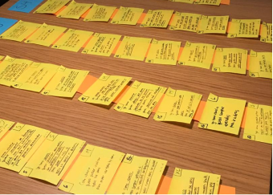
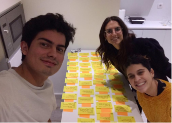
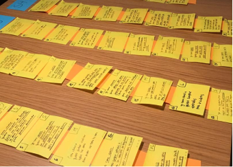
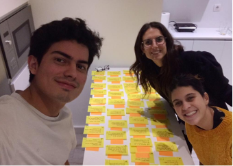
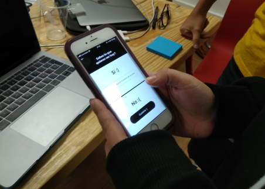
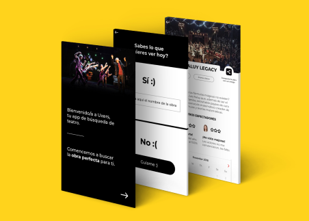
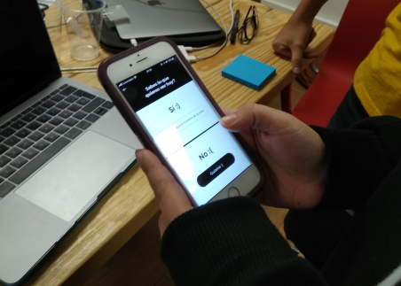
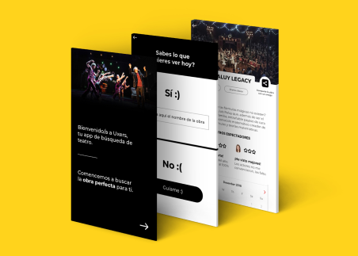

La Platea
A Web for searching and purchasing theater tickets in Barcelona.
- UX research, UX-UI design, prototype and testing
- November 2018 - June 2019
- Master's Degree Thesis
- UXPressia
- 10.0000000 Post-Its
- Photoshop
- Figma
- Illustrator

The Challenge
The brief for the project was to find a way to improve the experience of going to the theatre.
Design Process
Before we started working on this project, we studied how to work with the methodologies such as Scrum and Kanban, and approach the project by following the Agile Manifesto, which means creating our product incrementally, and improving it in brief periods of work times called "Sprints".
The whole process lasted for almost 7 month of research, learning the needs of our user, interviews, wireframes, user interface design and testing our work every 3 weeks.

Research

We started by doing a research of the theaters that exist in Barcelona, occupancy of the venues, benchmark of other website that sell theatre tickets, daily amount of shows , and average earnings of tickets sells, to understand, where can we stand out.
We define our proto persona, this way all the members of the team were able to be align and understand who are we designing for, to do this we did 60 surveys, 1 user journey map to understand pain points, touch points, and the moments of truth of our user. Then we went out to the field to start interviewing real users to validate our work.

Define
After interviewing 25 people from different backgrounds, we were able to define our user persona. Anna, is a 26 y/o women, looking for something fun to do in her free time, she enjoys going to the theater, unfortunately it is a bit expensive for her, she goes only once or twice a year.
Once we defined our user persona, we were able to create our journey map with InSites of the interviewing proccess and understand better the needs of our user and what is missing.
The main Pain Points of our user where:
1. The moment of searching for shows in Barcelona, it was hard for them to find the right information.
2. The process of purchasing the tickets, it is usually a long and complicated proccess.
3. The moment of going to watch the show, many times they were disappointed with their choice, because when purchasing the tickets they didn't had enough information.
4. Leaving a review, most of our user like to read reviews, but they never leave a review.

After researching the market and our target, we decided to create a web for searching and purchasing theater tickets, in a way that will be easy, fast and familiar to young people who want to go to the theater in Barcelona.
Organize
We defined our user stories following the structure of "As a (type of user), I want (some goal) so that (some reason), and only after we finish writing them all we where able to organize our Product Backlog.
Because the project was done while working Agile, we had to divide our User stories in 5 different sprints according to their size, in our case we divided them using T-shirt Sizes (XS,S,M,L,XL). Also we had to give each story a DOD (definition of done) and DOR (definition of ready) and after giving each sprint a similar score (17 points each), we were ready to decide when will our product be ready for the first MVP.
 



Ideate
Before we started thinking about UX and design, we did benchmark to understand better what’s out there.
We investigated companies related to the theater, but also other companies and products that were not, such as, Zara, Disney, Mango, CaixaBank, and many more.
In the Design Sprint we decided to solve one problem, in our case was the search for new theater show, which in early stages of the process, we discovered that this was a pain point for our user.
During the week we created hypothesis for our problem and possible solutions
We designed Lo-Fi Wireframes and a simple prototype to test our ideas with real users. In the end of the week we tested our design, to verify if our hypothesis and solutions were the correct.
 



Build
Mobile First...this was the approach for the whole project, we started creating our Hi-Fi Wireframes and prototype to test our design before we started with the UI design.
We define our proto persona, this way all the members of the team were able to be align and understand who are we designing for, to do this we did 60 surveys, 1 user journey map to understand pain points, touch points, and the moments of truth of our user. Then we went out to the field to start interviewing real users to validate our work.